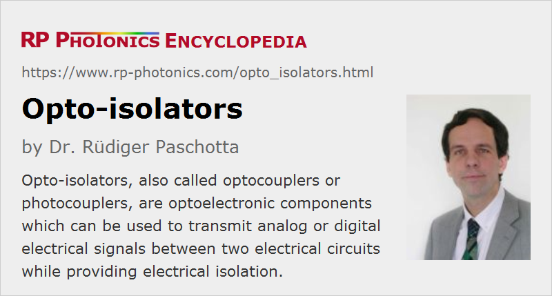

Opto-isolators
Definition: optoelectronic devices for signal transmission with electrical isolation between two electrical circuits
Alternative terms: optocouplers, photocouplers, optical isolators
German: Optokoppler, Opto-Isolatoren
How to cite the article; suggest additional literature
Author: Dr. Rüdiger Paschotta
Opto-isolators, also called optocouplers or photocouplers, are optoelectronic components which can be used to transmit analog or digital electrical signals between two electrical circuits while providing electrical isolation. An opto-isolator is normally provided in a compact package, e.g. of dual in-line type, as otherwise also used for small electronic components such as operational amplifiers.
Similar functions are often obtained with transformers, which however cannot transmit DC signals and are typically substantially larger and more heavy than opto-isolators.
Even though the term optical isolators is sometimes used, such devices must not be confused with optical isolators like Faraday isolators, which allow light transmission in one direction only.
Operation Principle and Variants
The operation principle of an opto-isolator is to convert an electrical signal to an optical signal, transmit that light signal and to convert it back into an electrical signal. Of course, one chooses an emitter which well matches the spectral response of the receiver. Typically, one uses an infrared light-emitting diode (LED, usually GaAs-based) and a silicon phototransistor. Those are mounted in a distance of a few millimeters, for example, within an opaque package.
There are also isolators with other kinds of receivers, for example photoresistors (which are largely outdated) or p–i–n photodiodes, or with Darlington phototransistors for a particularly high current transfer your ratio (see below). Early devices used an incandescent lamp as transmitter.
There are even devices containing a triac; the output then remains switched on even when the input signal disappears, until the output current is interrupted in other ways.
Simple isolators contain only the LED and a phototransistor, for example (see Figure 1), and no additional electronics. Others contain a complete receiver circuit, which requires some constant operation voltage and supplies an output voltage signal. Similarly, some devices contain a driver circuit which receives an input voltage signal.
A special form is the solid-state relay, which is explicitly used for switching a load, somewhat similar to a conventional relay based on a magnetically actuated mechanical switch; the receiver may contain one or two MOSFETs (a special kind of transistors).
Of course, the electrical integration must be done according to the type and specifications of the particular isolator used. There are substantial differences between different isolators. For example, devices with photoresistors can be used with arbitrary polarity, while those with photodiodes or phototransistors can not.
There are also bidirectional opto-isolators. In principle, one may realize such a device based on two LEDs, where each one reacts to light of the other one. However, much better performance is achieved by using one opto-isolator for each direction, which may be integrated into a common package.
The optical coupling between transmitter and receiver can be done in different ways. For example, one may just mount the transmitter close to the receiver to avoid substantial losses of light. For improved isolation, one can insert some dielectric material between them. One may also use a reflecting silicone dome or a kind of multimode waveguide. Particularly for high isolation voltages, one may prefer to use a relatively long waveguide, perhaps even a long optical fiber.
Device Parameters
Essential parameters of an opto-isolator are:
- One requires a certain input current to the LED. This is not a fixed value, however: it depends on how much photocurrent is required on the receiver side, particularly for the common devices based on an LED and a phototransistor: the maximum photocurrent is proportional to the optical power, which itself is proportional to the LED drive current. Therefore, apart from a maximum allowed input current manufacturers specify a current transfer ratio, which is the ratio of photocurrent to the drive current. The current transfer ratio depends on the efficiency of the emitter, the efficiency of the light transfer to the receiver, and on the responsivity of the receiver. Opto-isolators differ very much in that respect; while some have values well below 1%, others (with a phototransistor and efficient light coupling) can have ratios above 5 (= 500%).
- Such a device has a certain specified isolation voltage, i.e., a maximum allowed voltage between transmitter and receiver, which is often a couple of kilovolts. For operation with higher voltages, an electrical breakdown may occur, which would typically destroy the device.
- The operation bandwidth can easily be in the megahertz region, sometimes even above 1 GHz. The fastest response is obtained with p–i–n photodiodes. Phototransistors are typically slower than photodiodes.
- Typically, the relation between photocurrent and input drive current is fairly linear over a substantial range. (To exploit that linearity, one may need a driver circuit which provides an output current proportional to its input voltage.) However, some devices are meant to be for digital signals, where linearity is no relevant aspect.
Questions and Comments from Users
Here you can submit questions and comments. As far as they get accepted by the author, they will appear above this paragraph together with the author’s answer. The author will decide on acceptance based on certain criteria. Essentially, the issue must be of sufficiently broad interest.
Please do not enter personal data here; we would otherwise delete it soon. (See also our privacy declaration.) If you wish to receive personal feedback or consultancy from the author, please contact him e.g. via e-mail.
By submitting the information, you give your consent to the potential publication of your inputs on our website according to our rules. (If you later retract your consent, we will delete those inputs.) As your inputs are first reviewed by the author, they may be published with some delay.
See also: light-emitting diodes, phototransistors, power over fiber
and other articles in the category photonic devices
|  |
If you like this page, please share the link with your friends and colleagues, e.g. via social media:
These sharing buttons are implemented in a privacy-friendly way!